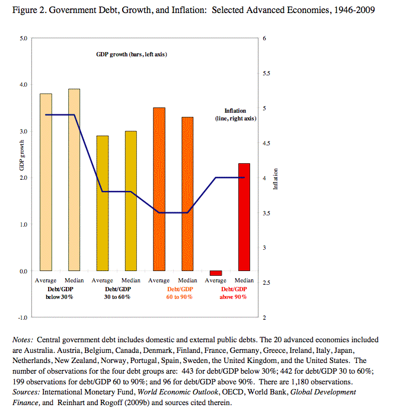

Exxon Mobile heavily relies on Google Earth for targeting potential drilling sites in the Indian Ocean. They have a team of engineers who use the software from an exploratory approach before conducting feasibility tests in person. Cheryl, who works for BP, wants to bypass the exploratory steps, so she works out a deal with Google to purchase a list of Exxon's recent location searches. As a result, BP buys the rights to several of these sites and begins extracting oil before Exxon Mobile.
"You never change things by fighting the existing reality. To change something, build a new model that makes the existing model obsolete." - Buckminster Fuller